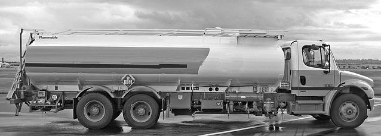
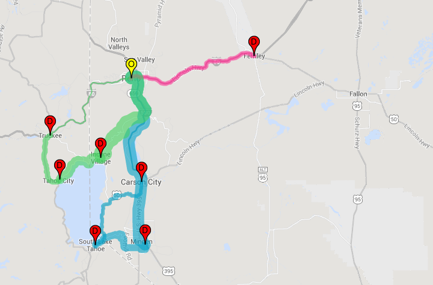

In this example we'll solve a simple vehicle routing problem: how to deliver diesel fuel by tanker truck to customers while driving the fewest miles.
We'll construct a mathematical model of the business problem, implement this model in Gurobi's Python interface, and compute and visualize an optimal solution.
Although you may not have to route tanker trucks in your own business, the same basic techniques used in this example translate to many different problems and applications.
 Let's begin with a basic description of the problem. A diesel transporter located in Reno, Nevada needs to deliver fuel to seven local customers in: South Lake Tahoe, Carson City, Garnerville, Fernely, Tahoe City, Incline Village, and Truckee.
The diesel fuel demands of all customers (in liters) are listed in the table below:
| Client | South Lake Tahoe | Carson City | Garnerville | Fernerly | Tahoe City | Incline Village | Truckee |
| Demand | 1000 | 1200 | 1600 | 1400 | 1200 | 1000 | 1700 |
The transport company uses tankers with a capacity of 4500 liters for the deliveries. Our goal is to determine the delivery routes that minimize the total miles driven.
The following table shows the driving distance (in miles) between each pair of sites:
| Reno | South Lake Tahoe | Carson City | Garnerville | Fernerly | Tahoe City | Incline Village | Truckee | |
| Reno | 59.3 | 31.6 | 47.8 | 34.2 | 47.1 | 36.1 | 31.9 | |
| South Lake Tahoe | 62.2 | 27.9 | 21.0 | 77.5 | 30.0 | 27.1 | 44.7 | |
| Carson City | 32.2 | 27.7 | 16.2 | 50.0 | 39.4 | 24.9 | 42.6 | |
| Gardnerville | 50.7 | 21.0 | 16.4 | 66.1 | 49.7 | 35.2 | 52.9 | |
| Fernley | 34.4 | 77.4 | 49.6 | 65.9 | 80.8 | 67.1 | 65.5 | |
| Tahoe City | 46.9 | 30.1 | 39.6 | 49.7 | 80.5 | 14.4 | 15.0 | |
| Incline Village | 36.9 | 27.1 | 25.2 | 35.2 | 67.1 | 14.4 | 17.6 | |
| Truckee | 31.9 | 44.7 | 62.8 | 52.8 | 65.5 | 15.0 | 17.6 |
You can get this distance data from Google Maps's Distance Matrix API, but for a small problem with only a few clients, you can just search for each pair directly on Google Maps.
Without further ado, here is a visualization of the final truck routes. You can also jump directly to the live demo.
Three trucks (or truckloads) are required to service all clients. The paths of each truck are shown. The width of each truck's path represents the volume of diesel in the tank. After dropping fuel off at a client's site the volume of diesel in the truck, and the width of the path, decreases.
This problem was originally formulated in 1959 by Dantzig and Ramser. They named it the Truck Dispatching Problem and considered it to be a generalization of the famous Traveling Salesman Problem.
Here the salesmen are the truck drivers that must start and finish each tour at the depot in Reno. As in the TSP, we must determine the order of the clients that are visited within each tour. But unlike the TSP, we are allowed to have multiple tours. We must compute the number of tours (or truck drivers) that are needed to complete all deliveries.
We don't need to capture the structure of the roads to solve this problem. We only need know the driving distance between each pair of clients (and the transport company's depot). For example, we only need to know how many miles there are in the shortest route between Carson City and South Lake Tahoe, not the step-by-step driving directions.
This means our problem defines a graph. Clients (and the depot) are represented by nodes in the graph. There are two directed edges between every pair of nodes, and a driving distance associated with each edge.
We introduce variables $x_{ij}$ such that \[ x_{ij} = \begin{cases} 1 & \text{if client $i$ immediately precedes $j$} \\ 0 & \text{otherwise}. \end{cases} \] Let $\mathrm{sites} = \{0, \ldots, N-1\}$ be a set that defines the $N$ sites. We'll say that site $0$ is the depot and that the clients are a subset of $\mathrm{sites}$: \[ \mathrm{clients} = \{1, \ldots, N-1\}. \] Let $\mathrm{dist}_{ij}$ be the distance between towns $i$ and $j$. We'll use $q_i$ to represent the quantity of fuel ordered by client $i$. Each truck can hold a maximum of $Q$ liters of fuels. We'll use variables $u_i$ to represent the amount of fuel delivered on a route that includes client $i$.
Now that we have established a notation, let's take a look at the mathematical model: \[ \def\clients{\mathrm{clients}} \def\sites{\mathrm{sites}} \def\dem{q} \def\quant{u} \def\prec{x} \def\dist{\mathrm{dist}} \def\cap{Q} \hspace{-50pt}\begin{align*} \mathrm{minimize} & \sum_{i \in \sites} \sum_{j \in \sites:\ i \ne j} \dist_{ij} \prec_{ij}\\ \mathrm{subject\ to} & \sum_{i \in \sites:\ i \ne j} \prec_{ij} = 1, \quad \forall j \in \clients \label{enter}\tag{1}\\ & \sum_{j \in \sites:\ i \ne j} \prec_{ij} = 1, \quad \forall i \in \clients \label{leave} \tag{2}\\ & \dem_i \le \quant_i \le \cap, \quad \forall i \in \clients \label{bounds} \tag{3} \\ & \quant_i \le \cap + (\dem_i - \cap) \prec_{0i}, \quad \forall i \in \clients \label{first} \tag{4}\\ & \quant_i - \quant_j + \cap \prec_{ij} \le \cap - \dem_j, \quad \forall i, j \in \clients, i \ne j \label{subtour} \tag{5} \\ & \prec_{ij} \in \{0, 1 \}, \quad \forall i, j \in \sites \\ \end{align*} \]
The objective of the model is to minimize the total miles driven. We must deliver to each customer once. This is expressed through constraints \eqref{enter} and \eqref{leave} that require a truck to enter and leave every client exactly once.
Constraint \eqref{bounds} states that the quantity $u_i$ must be greater than the demand $q_i$ of client $i$, but within the capacity $Q$ of the tankers.
Constraint \eqref{first} applies to the first client of a tour. If client $i$ is first client in a tour, $x_{0i} = 1$ and constraint \eqref{first} is \[ u_i \le q_i \] This, together with \eqref{bounds}, force $u_i = q_i$ for the first client of a tour. If client $i$ is not first in a tour, $x_{0i} = 0$ and constraint \eqref{first} is \[ u_i \le Q. \] This inequality is redudant, because of the bounds on $u_i$ in \eqref{bounds}
Together, constraints \eqref{bounds} and \eqref{subtour} eliminate subtours. To understand constraint \eqref{subtour} consider each case: $x_{ij} = 0$ and $x_{ij} = 1$.
When $x_{ij} = 0$, constraint \eqref{subtour} is simply \[ u_i - u_j \le Q - q_j \] This is a valid inequality, since the maximum value the left-hand side may obtain is \[ \begin{array}{rl} Q - q_j = {\displaystyle \underset{u_i, u_j}{\mathrm{maximize}}} & u_i - u_j \\ \mathrm{subject\ to} & q_i \le u_i \le Q\\ & q_j \le u_j \le Q. \end{array} \] This value is obtained when $u_i = Q$ and $u_j = q_j$.
When $x_{ij} = 1$, client $j$ immediately follows client $i$, and constraint \eqref{subtour} becomes \[ u_j \ge u_i + q_j \] This inequality says that the quantity $u_j$ in the tank at client $j$ must be greater than the quantity in the tank at client $i$ (its immediate predecessor) plus the demand of client $j$.
By assigning a quantity $u_i$ to every client $i$ we make sure the capacity of the tankers is not exceeded. We also eliminate any tour, like the one shown below, that does not include the depot. Assigning the strictly increasing values $u_i$ to clients in a tour excludes this type of solution.
Below is the full implementation of the model (and the associated data) in Gurobi's Python interface:
The app below allows you to explore the solutions generated by the above model. Google's Maps API is used to compute the pairwise driving distances between each of the sites. This distance data, as well as the clients demand, are sent back to web server, where the above model is instantiated with the data and solved in real-time using the Gurobi Optimizer.
The demo is initialized with four of the seven clients. Try adding a few more clients to see how the tours change. For example, try adding clients in Tahoe City, Incline Village, and Truckee.